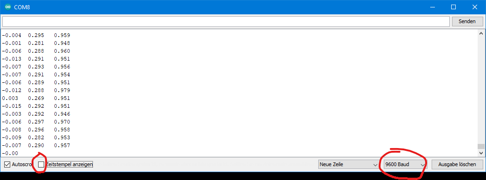

Datenaufnahme mit dem Beschleunigungssensor
Um Daten mit Ihrem Beschleunigungssensor aufnehmen können, muss zuerst eine SparkFun spezifische Bibliothek installiert werden. Dazu sind folgende Schritte zu befolgen:
- Installieren der Bibliothek
Die Bibliothek wird für die SparkFun Qwiic Verbindung benötigt und bietet Beispiel-Code zum Vorverarbeiten von Daten oder um Einstellungen am Sensor vornehmen zu können. Die Installation findet in der Arduino IDE statt, klicken Sie dafür auf Sketch → Bibliothek einbinden → Bibliotheken verwalten… → Eingabe in Suchzeile: SparkFun MMA8452Q Accelerometer → installieren klicken
Testen mit Beispiel 1: Basic Reading In der Bibliothek ist ein Beispiel-Code enthalten, welcher durch Datei → Beispiele → Beispiele aus eigenen Bibliotheken (ganz unten) → SparkFun MMA8452Q Accelerometer → Example1_BasicReading aufzurufen ist.
Hochladen des Beispiels Verbinde deinen Mikrocontroller über USB mit dem Computer. Verwende nun eines der beiliegenden Qwiic Kabel, um den Mikrocontroller mit dem Beschleunigungssensor zu verbinden (Bitte auf die richtige Orientierung des Kabels achten - Wenn es nicht einfach zu stecken ist, um 180 Grad drehen und nochmal versuchen … bitte vorsichtig!). Uber den Hochladen-Button den Code nun auf den Mikrocontroller laden.
Serieller Monitor & Plotter über Werkzeug → serieller Monitor lassen sich Daten durch die print() Funktion darstellen. Dabei ist zu Beginn eines C-Programmes die Baud Rate angegeben, welche angibt, wie schnell Daten vom Mikrocontroller zum seriellen Monitor transferiert werden können. Daten werden nur angezeigt, wenn die Baud Rate im seriellen Monitor gleich der im Code angegeben Rate bei Serial.begin(9600) ist. Die in Abbildung 1.2 rot markierte Box Zeitstempel anzeigen soll nicht angekreuzt sein, da dies beim Vorverarbeiten der Daten zu Komplikationen führen kann.
{kind=link}
 Abbildung 1.2: Vorzunehmende Einstellungen des seriellen Monitors der Arduino IDE. Zeitstempel soll deaktiviert sein. Baud Rate muss der im Code gleichen.
Probieren Sie auch den seriellen Plotter aus, dieser ermöglicht eine grafische Repräsentation der Daten. Achtung: Es kann immer nur der serielle Plotter ODER Monitor angezeigt werden!
Aufgabe: Koordinatensystem Auf dem Beschleunigungssensor ist ein Koordinatensystem gegeben, welches die x-, y- und z-Achse angibt. Welcher Wert der drei angezeigten Beschleunigungen gehört zu welcher Achse? Wie kann man dies testen und in welcher Einheit werden die Daten ausgegeben?
Speichern der Daten Das Speichern der Daten in eine .txt Datei wird über einfaches Copy&Paste durchgeführt. Dafür muss ein neues .txt-Dokument erstellt und geöffnet werden. Trennen Sie nun die Verbindung zwischen Mikrocontroller und
Computer - dadurch stoppt die im seriellen Monitor angezeigte Datenübertragung. Wählen Sie das Feld mit den Daten aus und kopieren Sie alle Daten mit der Tastenkombination Strg + A (Alles auswählen) → Strg + C (Kopieren) & Strg + V (Einfügen) in Ihr Text-Datei.
ACHTUNG: Fehlerbehebung
Mit jedem Hochladen eines Programmes muss die Baud-Rate mit der im seriellen Monitor/Plotter übereinstimmen, sonst werden keine Daten angezeigt.
- Falls der Fehler ”NoSuchFileException“ beim Download der Bibliothek für den Beschleunigungssensor entsteht, gibt es in diesem **Forum{:target=“_blank”}** mögliche Lösungsansätze.